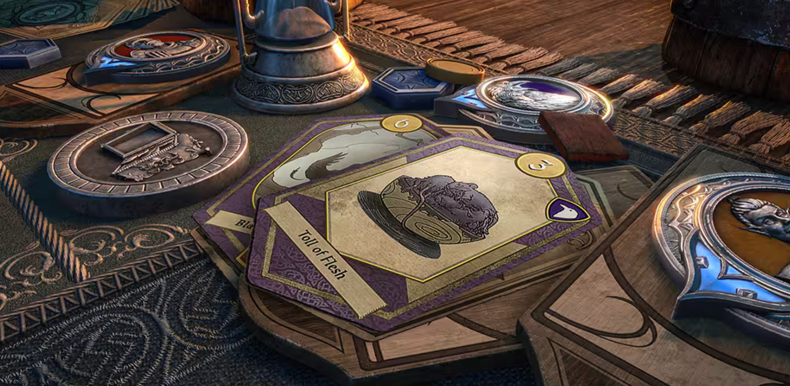
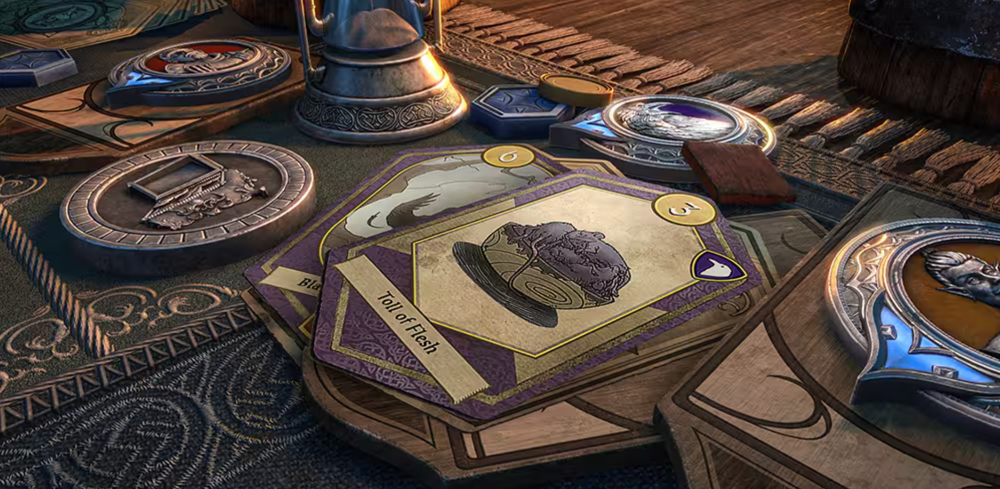

Projects
Here is a selection of my most significant academic and personal projects. Each one represents a deep dive into different areas of AI and gameplay programming, from reinforcement learning to multiplayer systems.

Learning Agents for Racing
This project is an exploration of Epic Games' experimental "Learning Agents" plugin.
Building upon the official "Learning to Drive" tutorial, I am expanding the scope by
designing a more complex racetrack with multiple jumps. The goal is to train an agent using
Reinforcement Learning (PPO algorithm) not just to navigate the track, but also to learn the necessary
speed and physics control to successfully clear the jumps.
The project is being developed in Unreal Engine 5.6, utilizing the new Racing Template for
its more realistic vehicle physics. This serves as a foundational exercise for a future,
more complex AI project in Lyra. A video of the final trained agent will be uploaded to
YouTube upon completion and all the code will be available on GitHub.
AI for Scripts of Tribute
For my Data Science and AI Master's Thesis, I designed and implemented a competitive bot for
the card game "Tales of Tribute" using the "Scripts of Tribute" engine. The agent's
decision making is driven by a heuristic evaluation function parameterized by a vector of
weights.
To optimize these weights, I built a training system using an evolutionary strategy
algorithm, comparing fixed, co-evolution, and hybrid training modes. A "hall of fame"
mechanism was also integrated to preserve elite agents and combat catastrophic forgetting,
validating the effectiveness of the evolutionary approach for complex strategy games.
 


King of Recess
"King of Recess" is a multiplayer party game developed from scratch in Unreal Engine 5 as a collaborative project between programming and art students at UT-HUB. As a multiplayer and AI programmer on the team, I took on several key responsibilities to bring our "Silent Library" minigame to life.
- AI design: I designed and implemented the core AI for the blind librarian antagonist. Using Behavior Trees and Unreal's perception system, I created an agent that relies solely on its hearing sense to detect player generated noise, investigate disturbances, and chase down the closest player.
- Multiplayer stats system: I developed the whole player statistics system for the game. To ensure that all data was appropriately synchronized for every player in a networked setting, this involved building a duplicated, persistent point counter that monitors player performance across minigames and levels.
- Code quality and integration: I took the initiative to make less experienced programmers' code easier to read and maintain by refactoring and cleaning it. Additionally, I worked on utilizing my colleagues' systems and resolved critical, complex bugs, such as a persistent issue that prevented players from successfully traveling between levels.
Reinforcement Learning in Shooting Minigame
For my honors Bachelor's Thesis, I demonstrated the viability of combining Unreal Engine
with Reinforcement Learning. Using the Lyra Starter Game as a foundation, I created a 3D
shooting gallery environment to serve as a training ground for an AI agent.
I developed a system connecting the C++ based game to a separate Python program for
training. This program utilized libraries like Stable Baselines 3 (for PPO and A2C
algorithms) and Gymnasium (for the training environment). I also implemented
hyperparameter tuning with Optuna to optimize the agent's performance, creating
a system where a neural network could learn to play the game.